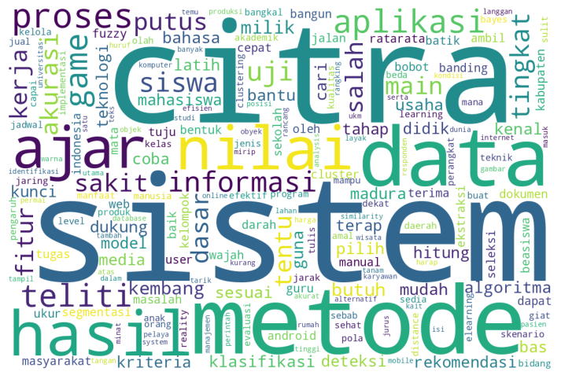
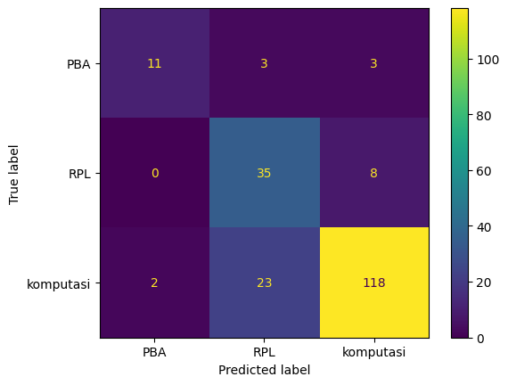
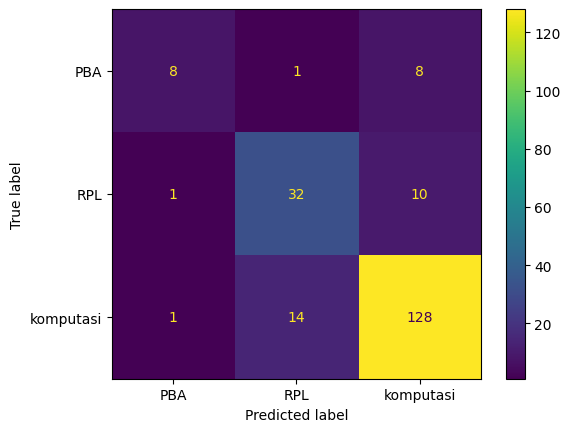

UTS (KLASIFIKASI ABSTRAK PTA)#
Read data PTA mentah#
import pandas as pd
import numpy as np
import matplotlib.pyplot as plt
from tqdm import tqdm
tqdm.pandas()
# df = pd.read_excel('pta_mentah.xlsx')
df = pd.read_csv('https://raw.githubusercontent.com/HamedAyani114/dataset/main/csv/Data_PTA_mentah.csv')
df.head()
| NPM | Judul | Abstrak | Prodi | Label | |
|---|---|---|---|---|---|
| 0 | 40411100468 | PERANCANGAN DAN IMPLEMENTASI SISTEM DATABASE T... | Sistem informasi akademik (SIAKAD) merupaka... | Teknik Informatika | RPL |
| 1 | 40411100476 | APLIKASI KONTROL DAN MONITORING JARINGAN KOMPU... | Berjalannya koneksi jaringan komputer dengan l... | Teknik Informatika | RPL |
| 2 | 40411100480 | RANCANG BANGUN APLIKASI PROXY SERVER UNTUKENKR... | Web server adalah sebuah perangkat lunak serve... | Teknik Informatika | RPL |
| 3 | 70411100070 | SISTEM PENDUKUNG KEPUTUSAN OPTIMASI PENJADWALA... | Penjadwalan kuliah di Perguruan Tinggi me... | Teknik Informatika | komputasi |
| 4 | 80411100115 | SISTEM AUGMENTED REALITY ANIMASI BENDA BERGERA... | Seiring perkembangan teknologi yang ada diduni... | Teknik Informatika | komputasi |
df.shape
(853, 5)
Data Cleanning#
Eksplorasi data dan Cleaning#
df.isnull().sum()
NPM 0
Judul 6
Abstrak 25
Prodi 0
Label 43
dtype: int64
df.dropna(inplace=True)
df.shape
(810, 5)
import re, string
# Cleaning
def cleaning(text):
# Remove HTML tags
text = re.compile('<.*?>|&([a-z0-9]+|#[0-9]{1,6}|#x[0-9a-f]{1,6});').sub(' ', text)
# Case folding
text = (text.lower())
# Trim text (Menghapus semua spasi dari teks kecuali spasi tunggal di antara kata-kata)
text = text.strip()
# Remove punctuations, special characters, and double whitespace
text = re.sub(r'\[[0-9]*\]', ' ', text)
text = re.sub(r'[^\w\s]', '', str(text).lower().strip())
text = re.sub(r'\d', ' ', text)
text = re.sub(r'\s+', ' ', text)
# Mengubah text 'nan' dengan whitespace agar nantinya dapat dihapus
text = re.sub('nan', '', text)
return text
df['Abstrak'] = df['Abstrak'].apply(lambda x: cleaning(x))
df['Judul'] = df['Judul'].apply(lambda x: cleaning(x))
df.shape
(810, 5)
# Ubah empty string menjadi NaN value
df = df.replace('', np.nan)
df.isnull().sum()
NPM 0
Judul 0
Abstrak 0
Prodi 0
Label 0
dtype: int64
df.dropna(inplace=True)
df.shape
(810, 5)
df[df['Judul'].duplicated()]
| NPM | Judul | Abstrak | Prodi | Label | |
|---|---|---|---|---|---|
| 728 | 120411100015 | sistem pendukung keputusan pemilihan pemain bo... | peningkatan pembinaan permai bola voli terutam... | Teknik Informatika | komputasi |
# Hapus data duplikat
df.drop_duplicates(subset=['Judul'], inplace=True)
# Apakah masih terdapat duplikasi pada kolom "Judul"?
df[df['Judul'].duplicated()]
| NPM | Judul | Abstrak | Prodi | Label |
|---|
df.isnull().sum()
NPM 0
Judul 0
Abstrak 0
Prodi 0
Label 0
dtype: int64
df.shape
(809, 5)
Tokenization#
import nltk
nltk.download('popular', quiet=True)
from nltk.tokenize import word_tokenize
df.shape
(809, 5)
df['abstrak_tokens'] = df['Abstrak'].apply(lambda x: word_tokenize(x))
df['abstrak_tokens']
0 [sistem, informasi, akademik, siakad, merupaka...
1 [berjalannya, koneksi, jaringan, komputer, den...
2 [web, server, adalah, sebuah, perangkat, lunak...
3 [penjadwalan, kuliah, di, perguruan, tinggi, m...
4 [seiring, perkembangan, teknologi, yang, ada, ...
...
848 [investasi, saham, selama, ini, memiliki, resi...
849 [information, retrieval, ir, merupakan, pengam...
850 [klasifikasi, citra, merupakan, proses, pengel...
851 [identifikasi, atribut, pejalan, kaki, merupak...
852 [topik, deteksi, objek, telah, menarik, perhat...
Name: abstrak_tokens, Length: 809, dtype: object
Stopword#
from nltk.corpus import stopwords
from nltk.tokenize import word_tokenize
from itertools import chain
stop_words = set(chain(stopwords.words('indonesian')))
df['abstrak_tokens']=df['abstrak_tokens'].apply(lambda x: [w for w in x if not w in stop_words])
Stemming#
!pip install Sastrawi --quiet
?25l ━━━━━━━━━━━━━━━━━━━━━━━━━━━━━━━━━━━━━━━━ 0.0/209.7 kB ? eta -:--:--
━━━━━━━━━━━━━━━━━━━━━━━━━━━━━━━━━━━━━━╺ 204.8/209.7 kB 6.9 MB/s eta 0:00:01
━━━━━━━━━━━━━━━━━━━━━━━━━━━━━━━━━━━━━━━ 209.7/209.7 kB 5.1 MB/s eta 0:00:00
?25h
from Sastrawi.Stemmer.StemmerFactory import StemmerFactory
factory = StemmerFactory()
stemmer = factory.create_stemmer()
df['abstrak_tokens']=df['abstrak_tokens'].progress_apply(lambda x: stemmer.stem(' '.join(x)).split(' '))
0%| | 0/809 [00:00<?, ?it/s]
0%| | 2/809 [00:05<35:47, 2.66s/it]
0%| | 3/809 [00:10<47:18, 3.52s/it]
0%| | 4/809 [00:16<1:02:38, 4.67s/it]
1%| | 5/809 [00:17<46:03, 3.44s/it]
1%| | 6/809 [00:20<44:52, 3.35s/it]
1%| | 7/809 [00:24<44:51, 3.36s/it]
1%| | 8/809 [00:25<35:27, 2.66s/it]
1%| | 9/809 [00:26<29:08, 2.19s/it]
1%| | 10/809 [00:28<27:43, 2.08s/it]
1%| | 10/809 [00:29<39:56, 3.00s/it]
KeyboardInterruptTraceback (most recent call last)
<ipython-input-25-e1879301b018> in <cell line: 1>()
----> 1 df['abstrak_tokens']=df['abstrak_tokens'].progress_apply(lambda x: stemmer.stem(' '.join(x)).split(' '))
/usr/local/lib/python3.9/dist-packages/tqdm/std.py in inner(df, func, *args, **kwargs)
803 # on the df using our wrapper (which provides bar updating)
804 try:
--> 805 return getattr(df, df_function)(wrapper, **kwargs)
806 finally:
807 t.close()
/usr/local/lib/python3.9/dist-packages/pandas/core/series.py in apply(self, func, convert_dtype, args, **kwargs)
4769 dtype: float64
4770 """
-> 4771 return SeriesApply(self, func, convert_dtype, args, kwargs).apply()
4772
4773 def _reduce(
/usr/local/lib/python3.9/dist-packages/pandas/core/apply.py in apply(self)
1121
1122 # self.f is Callable
-> 1123 return self.apply_standard()
1124
1125 def agg(self):
/usr/local/lib/python3.9/dist-packages/pandas/core/apply.py in apply_standard(self)
1172 else:
1173 values = obj.astype(object)._values
-> 1174 mapped = lib.map_infer(
1175 values,
1176 f,
/usr/local/lib/python3.9/dist-packages/pandas/_libs/lib.pyx in pandas._libs.lib.map_infer()
/usr/local/lib/python3.9/dist-packages/tqdm/std.py in wrapper(*args, **kwargs)
798 # take a fast or slow code path; so stop when t.total==t.n
799 t.update(n=1 if not t.total or t.n < t.total else 0)
--> 800 return func(*args, **kwargs)
801
802 # Apply the provided function (in **kwargs)
<ipython-input-25-e1879301b018> in <lambda>(x)
----> 1 df['abstrak_tokens']=df['abstrak_tokens'].progress_apply(lambda x: stemmer.stem(' '.join(x)).split(' '))
/usr/local/lib/python3.9/dist-packages/Sastrawi/Stemmer/CachedStemmer.py in stem(self, text)
18 stems.append(self.cache.get(word))
19 else:
---> 20 stem = self.delegatedStemmer.stem(word)
21 self.cache.set(word, stem)
22 stems.append(stem)
/usr/local/lib/python3.9/dist-packages/Sastrawi/Stemmer/Stemmer.py in stem(self, text)
25
26 for word in words:
---> 27 stems.append(self.stem_word(word))
28
29 return ' '.join(stems)
/usr/local/lib/python3.9/dist-packages/Sastrawi/Stemmer/Stemmer.py in stem_word(self, word)
34 return self.stem_plural_word(word)
35 else:
---> 36 return self.stem_singular_word(word)
37
38 def is_plural(self, word):
/usr/local/lib/python3.9/dist-packages/Sastrawi/Stemmer/Stemmer.py in stem_singular_word(self, word)
82 """Stem a singular word to its common stem form."""
83 context = Context(word, self.dictionary, self.visitor_provider)
---> 84 context.execute()
85
86 return context.result
/usr/local/lib/python3.9/dist-packages/Sastrawi/Stemmer/Context/Context.py in execute(self)
35
36 #step 1 - 5
---> 37 self.start_stemming_process()
38
39 #step 6
/usr/local/lib/python3.9/dist-packages/Sastrawi/Stemmer/Context/Context.py in start_stemming_process(self)
78
79 #step 4, 5
---> 80 self.remove_prefixes()
81 if self.dictionary.contains(self.current_word):
82 return
/usr/local/lib/python3.9/dist-packages/Sastrawi/Stemmer/Context/Context.py in remove_prefixes(self)
87 def remove_prefixes(self):
88 for i in range(3):
---> 89 self.accept_prefix_visitors(self.prefix_pisitors)
90 if self.dictionary.contains(self.current_word):
91 return
/usr/local/lib/python3.9/dist-packages/Sastrawi/Stemmer/Context/Context.py in accept_prefix_visitors(self, visitors)
109 for visitor in visitors:
110 self.accept(visitor)
--> 111 if self.dictionary.contains(self.current_word):
112 return self.current_word
113 if self.process_is_stopped:
KeyboardInterrupt:
export data bersih#
df['abstrak_tokens']=df['abstrak_tokens'].apply(lambda x: ' '.join(x))
df.to_csv('DataOlah_Pta_clean.csv', index=False)
Read data bersih PTA prepo#
dfnw=pd.read_csv('https://raw.githubusercontent.com/HamedAyani114/dataset/main/csv/DataOlah_Pta_clean.csv')
dfnw.head()
| Unnamed: 0 | NPM | Judul | Abstrak | Prodi | Label | judul_tokens | abstrak_tokens | |
|---|---|---|---|---|---|---|---|---|
| 0 | 0 | 40411100468 | perancangan dan implementasi sistem database t... | sistem informasi akademik siakad merupakan sis... | Teknik Informatika | RPL | ['perancangan', 'implementasi', 'sistem', 'dat... | sistem informasi akademik siakad sistem inform... |
| 1 | 1 | 40411100476 | aplikasi kontrol dan monitoring jaringan kompu... | berjalannya koneksi jaringan komputer dengan l... | Teknik Informatika | RPL | ['aplikasi', 'kontrol', 'monitoring', 'jaringa... | jalan koneksi jaring komputer lancar ganggu ha... |
| 2 | 2 | 40411100480 | rancang bangun aplikasi proxy server untukenkr... | web server adalah sebuah perangkat lunak serve... | Teknik Informatika | RPL | ['rancang', 'bangun', 'aplikasi', 'proxy', 'se... | web server perangkat lunak server berfungsimen... |
| 3 | 3 | 70411100070 | sistem pendukung keputusan optimasi penjadwala... | penjadwalan kuliah di perguruan tinggi merupak... | Teknik Informatika | komputasi | ['sistem', 'pendukung', 'keputusan', 'optimasi... | jadwal kuliah guru kompleks masalah variabel t... |
| 4 | 4 | 80411100115 | sistem augmented reality animasi benda bergera... | seiring perkembangan teknologi yang ada diduni... | Teknik Informatika | komputasi | ['sistem', 'augmented', 'reality', 'animasi', ... | iring kembang teknologi dunia muncul teknologi... |
dfnw['Label'].value_counts()
komputasi 572
RPL 198
PBA 39
Name: Label, dtype: int64
# Distribusi Kelas
dfnw['Label'].value_counts().plot(kind='barh')
plt.show()

X = dfnw['abstrak_tokens']
y = dfnw['Label']
# X_array=dfnw['abstrak_tokens'].apply(lambda x: word_tokenize(x))
Pembobotan Kata#
Word2Vec#
from gensim.test.utils import common_texts, get_tmpfile
from gensim.models import Word2Vec
# Word2Vec modeling.
# model = Word2Vec(sentences=common_texts, vector_size=100, window=5, min_count=1, workers=4)
model_X_word2vec = Word2Vec(sentences=X_array, vector_size=100, window=5, min_count=1, workers=4)
model_X_word2vec.predict_output_word("abjad")
[('x', 0.00022338174),
('c', 0.00018961739),
('baik', 0.00017294916),
('huruf', 0.00017141516),
('menggunka', 0.00017073861),
('means', 0.00017066435),
('penjadwaln', 0.00017020087),
('k', 0.00016951741),
('bahasa', 0.00016903484),
('madura', 0.00016851537)]
TF-IDF#
from sklearn.feature_extraction.text import TfidfVectorizer,CountVectorizer
tfidf_vectorizer = TfidfVectorizer()
count_vectorizer = CountVectorizer()
X_tfidf = tfidf_vectorizer.fit_transform(X)
X_countvector = count_vectorizer.fit_transform(X)
terms_tfidf = tfidf_vectorizer.get_feature_names_out()
terms_countvector = count_vectorizer.get_feature_names_out()
sums = X_tfidf.sum(axis=0)
data = []
for col, term in enumerate (terms_tfidf):
data.append((term, sums[0,col]))
ranking = pd.DataFrame(data, columns=['term', 'rank'])
print(ranking.sort_values('rank', ascending=False))
term rank
5376 sistem 32.339549
1173 data 28.965659
939 citra 28.863548
3609 metode 28.713771
2085 hasil 27.121133
... ... ...
3887 numberabstrakberbagai 0.051212
2479 jarimenggunakan 0.051212
5160 seirver 0.040808
264 analyzer 0.040808
6364 wireshark 0.040808
[6442 rows x 2 columns]
# plot to wordcloud
from wordcloud import WordCloud
import matplotlib.pyplot as plt
wordcloud = WordCloud(background_color='white', width=1080, height=720).generate_from_frequencies(dict(zip(ranking['term'], ranking['rank'])))
plt.figure(figsize=(12, 6))
plt.imshow(wordcloud)
plt.axis('off')
plt.show()

Reduksi Dimensi#
print("shape X_tfidf :", X_tfidf.shape)
# print("shape X_countvector :", X_countvector.shape)
shape X_tfidf : (809, 7269)
X_tfidf_array=X_tfidf.toarray()
X_tfidf_array
array([[0., 0., 0., ..., 0., 0., 0.],
[0., 0., 0., ..., 0., 0., 0.],
[0., 0., 0., ..., 0., 0., 0.],
...,
[0., 0., 0., ..., 0., 0., 0.],
[0., 0., 0., ..., 0., 0., 0.],
[0., 0., 0., ..., 0., 0., 0.]])
X_tfidf_array.shape
(809, 7269)
from sklearn.decomposition import PCA
pca = PCA(n_components=100)
X_tfidf_pca = pca.fit_transform(X_tfidf_array)
X_tfidf_pca.shape
(809, 100)
Split Data#
from sklearn.model_selection import train_test_split
X_train, X_test, y_train, y_test = train_test_split(X_tfidf_pca, y, test_size=0.25, random_state=42)
Model#
Model Naive Bayes#
from sklearn.metrics import accuracy_score, precision_score, recall_score, f1_score
from sklearn.naive_bayes import GaussianNB
gnb = GaussianNB()
gnb.fit(X_train, y_train)
y_pred_gnb = gnb.predict(X_test)
print('Accuracy score : ', accuracy_score(y_test, y_pred_gnb))
print('Precision score : ', precision_score(y_test, y_pred_gnb, average='weighted'))
print('Recall score : ', recall_score(y_test, y_pred_gnb, average='weighted'))
print('F1 score : ', f1_score(y_test, y_pred_gnb, average='weighted'))
Accuracy score : 0.8078817733990148
Precision score : 0.8367632910470145
Recall score : 0.8078817733990148
F1 score : 0.8151847476391088
from sklearn.metrics import ConfusionMatrixDisplay
from matplotlib import pyplot as plt
ConfusionMatrixDisplay.from_predictions(y_test, y_pred_gnb)
plt.show()

from sklearn.metrics import classification_report
print(classification_report(y_test, y_pred_gnb))
precision recall f1-score support
PBA 0.85 0.65 0.73 17
RPL 0.57 0.81 0.67 43
komputasi 0.91 0.83 0.87 143
accuracy 0.81 203
macro avg 0.78 0.76 0.76 203
weighted avg 0.84 0.81 0.82 203
Model KNN#
from sklearn.metrics import accuracy_score, precision_score, recall_score, f1_score
from sklearn.neighbors import KNeighborsClassifier
knn = KNeighborsClassifier(n_neighbors=3)
knn.fit(X_train, y_train)
y_pred_knn = knn.predict(X_test)
print('Accuracy score : ', accuracy_score(y_test, y_pred_knn))
print('Precision score : ', precision_score(y_test, y_pred_knn, average='weighted'))
print('Recall score : ', recall_score(y_test, y_pred_knn, average='weighted'))
print('F1 score : ', f1_score(y_test, y_pred_knn, average='weighted'))
Accuracy score : 0.8275862068965517
Precision score : 0.8288002894501452
Recall score : 0.8275862068965517
F1 score : 0.8242518824072339
from sklearn.metrics import ConfusionMatrixDisplay
from matplotlib import pyplot as plt
ConfusionMatrixDisplay.from_predictions(y_test, y_pred_knn)
plt.show()

from sklearn.metrics import classification_report
print(classification_report(y_test, y_pred_knn))
precision recall f1-score support
PBA 0.80 0.47 0.59 17
RPL 0.68 0.74 0.71 43
komputasi 0.88 0.90 0.89 143
accuracy 0.83 203
macro avg 0.79 0.70 0.73 203
weighted avg 0.83 0.83 0.82 203
Tes Model
# str_abstrak = input("Masukkan Abstraksi:\n")
# hasil = dtc.predict(tfidf_vectorizer.transform([str_abstrak]))
# print("Klasifikasi topik: " + "".join(hasil))
Export Model#
# from joblib import dump
# dump(gnb, filename="pta-tfidf_pca_gnb-model.joblib")